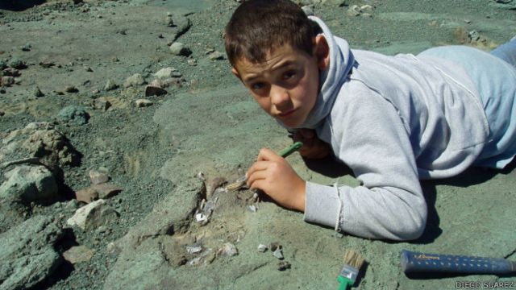

CILESAURUS
Diego Suárez tenía siete años cuando descubrió por casualidad uno de los dinosaurios más extraños e interesantes del mundo: el Chilesaurus.
Fue en 2004 cuando el niño Diego suarez fue con sus padres, los cuales eran geologos, a una investigacion a la region de Aysén. Según dice su padre Mnuel Suárez “Diego estaba obsesionado con los dinosaurios y jugaba con huesos de vacas como si fueran huesos de Diplodocus. Ese día golpeó una roca y saltaron varios fósiles. Así empezó todo”
Chilesaurus diegosuarezi es la única especie conocida del género extinto Chilesaurus de dinosaurio que vivió durante el Jurásico Superior, hace 150-146 millones de años en lo que es hoy Sudamérica. Sus fósiles fueron descubiertos en la región de Aysén, en Chile. El chilesaurio también era una especie de rompecabezas evolutivo. Perteneció al grupo de los terópodos, en su inmensa mayoría formado por dinosaurios carnívoros con espectaculares denticiones y una fuerza brutal como el tiranosaurio o el carnotaurus.
